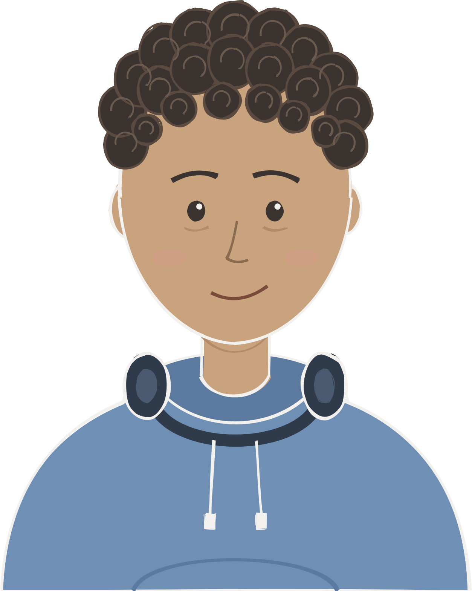
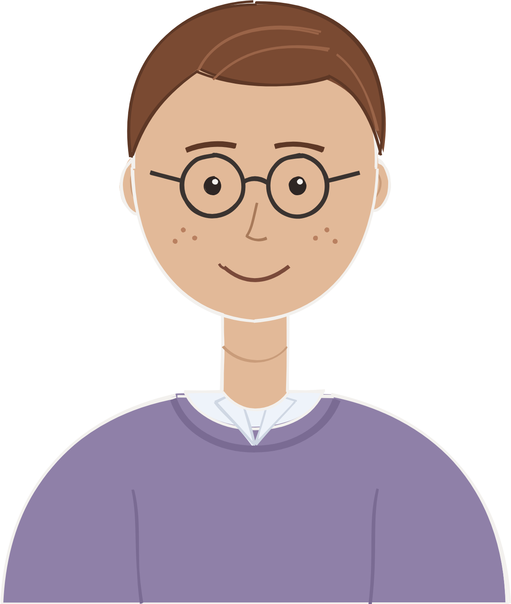
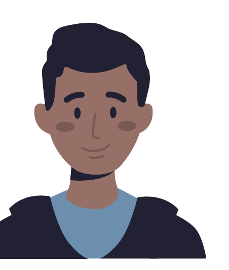
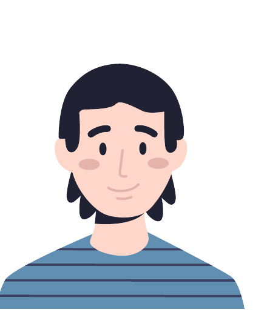
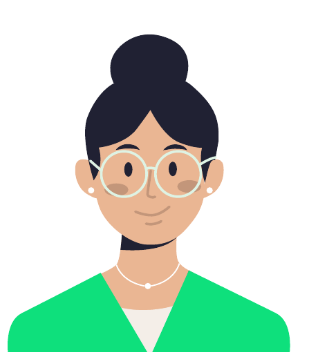
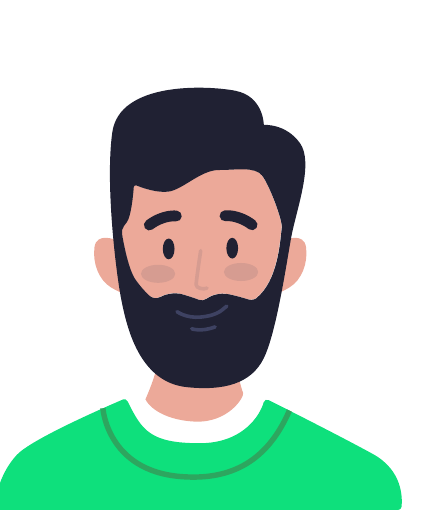
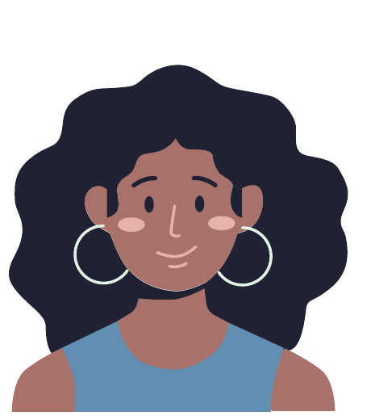

SKILL 6 OF 9 · SERVICE DESIGN AND CO-DESIGN
Personas
A profile of a group of people, built from research, that the whole team can design for. I use them to test a service at different ages, and from every side of it.
WHERE IT SHOWS UP · PICK A PROJECT
ALSO IN OTHER WORK ·Digital Education Hub · empathy mapping ▸
From research to one person on the page
- 01ResearchSessions, interviews and observation with the people the service is for.
- 02Group the needsArchetypes from the research, each with a name, a quote and what they need.
- 03Name the fearsThe barriers each persona meets, from the problem model.
- 04Follow one throughOne persona walked through the service, at the moments that matter.
- 05Check the other sidesThe people who supply what the persona sees.
Dylan, the Overwhelmed Explorer
One of five research-validated personas, observed across young people with inconsistent engagement, including some not in education, employment or training, and young people with limited support networks. Four of the five personas feel overwhelmed when they explore and filter options, so Dylan stands in for the biggest group. He is also the furthest from Clare, the one persona who feels in control.
“Looking for careers information online is overwhelming, I don’t know where to start and when I do find something I don’t think I have the qualities to be able to do it.”

Dylan through the ages
ONE PERSONA, MET AT 10, 13 AND 16The other side of what Dylan sees
What Dylan sees is only as good as what employers and providers give the service, so their journeys are designed too.- Could we have a call?She emails us.
- Most of it was filled in already.We send her an invite.
- Young people are finding us.Her profile goes live.

- Most of our courses were already there.We send Sam an invite.
- We added the new one ourselves.Sam adds what is missing
- Young people find our T Levels.They show in the finder and on route pages
A persona for every industry we interviewed
After interviews with companies, experts and researchers, the team drew up a persona for each field. Each one summarised the needs of a company or a larger entity, and each led to a How Might We question and a first prototype of where the leaf could fit. Plastics was taken forward.




